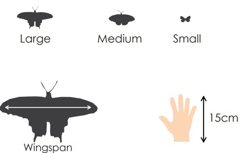

Below is a key that relates the colours and the families each butterfly belong to
Click To View The Butterflies under Each Family:
Habitats for a butterfly have been classified as follows:
- Grassland: Habitat dominated by grasses including temperate and tropical grasslands, savannas and shrubland ecosystems
- Deciduous: Forests that shed their leaves in fall as the exposure to sunlight decreases and re-grow them in spring
- Evergreen: Forests that are evergreen, semi-evergreen and moist evergreen, having cloud cover and mild temperature
- Scrub forest: This biome (ecosystem) has low-lying areas with dense shrubs, plants with leathery leaves adapted for arid lands and deserts
- Human habitation: Regions dominated by humans having a considerable green cover, sunlight and moist areas
- Woodland: Habitats with dense growth of trees and shrubs
-
 All Habitats
All Habitats
Butterflies are often identified by their shape, colour, size and patterns. The colour and patterns are usually different on the upper and lower wings. The first step in identification would be to determine the primary and secondary colours.
Also one should check for features such as eyespots, tail or any other distinct markings to confirm the identity